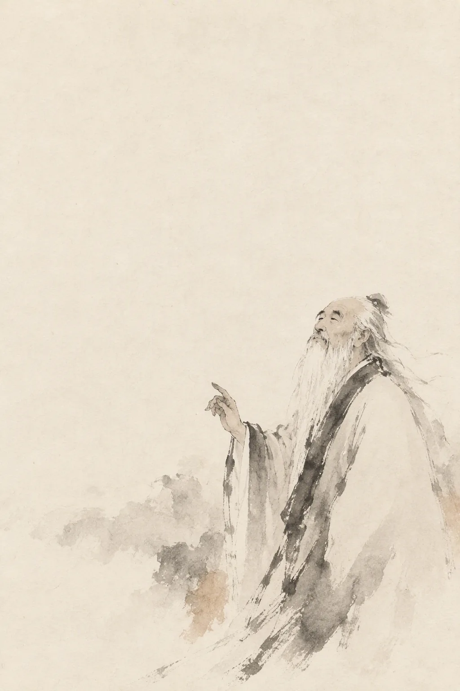

周 · 守藏室之史
道德经
道可道，非常道。五千言，八十一章。愿以一言，答君一问。

王弼本 · 八十一章 · 六千余言
道经 · 第一章
接入
密钥只保存在本机浏览器，请求直接发往你选择的服务商；若启用自建转发，也只经过你自己的服务器。多数境内服务商可直连，个别接口不支持浏览器跨域，见 README 的转发说明。
用于 Azure OpenAI、OpenRouter 或需要特殊开关的服务。额外请求头可覆盖 Authorization；密钥留空时不会发送 Authorization。
模型名更新较快，若提示模型不存在，请以服务商控制台为准。境外接口（OpenAI 等）需要网络可达。
此页需要 JavaScript 才能阅读与对话。